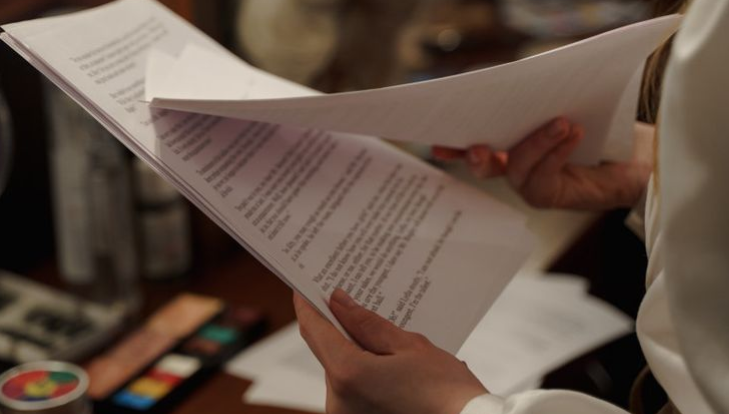

What is Pre-Production Planning?
Pre-production planning is the process of organizing and preparing everything needed before filming begins. It involves defining the video’s purpose, creating a script, deciding on locations, casting talent, and organizing the necessary equipment and crew. The goal of pre-production is to ensure that all aspects of the video shoot are carefully thought out, organized, and ready to go, which helps prevent delays and unexpected challenges during filming. This phase is essential for ensuring that the production runs smoothly, stays within budget, and meets the creative vision.
Importance of Pre-production
Pre-production is crucial because it sets the foundation for a successful production. It involves careful planning, such as defining the video's purpose, creating a script, selecting locations, casting talent, and organizing the necessary equipment and crew. By organizing these elements beforehand, pre-production helps avoid delays, reduces the risk of unforeseen challenges, and ensures everything runs smoothly. This phase is essential for staying within budget, meeting the creative vision, and achieving the desired outcome of the project. Without thorough pre-production planning, productions are more likely to encounter problems that could disrupt the process and affect the final result.
Script Breakdown
Once a project is greenlit, the next step is finalizing the shooting script. Once the script is locked, the first assistant director (AD) will analyze it thoroughly, creating a detailed breakdown of key logistical elements, including times of day, locations, characters, stunts, extras, special effects, props, vehicles, animals, sound effects, music cues, and costumes. The better prepared you are at this stage, the fewer unexpected challenges you'll face during filming or postproduction.

Crew
Gather your key team members and department heads. Essential hires include a director, first assistant director, production manager, cinematographer (director of photography), casting director, production designer, and costume designer. As preproduction progresses, these departments will grow, completing your crew.


Planning
During this phase, each department collaborates with the line producer to determine the resources required to bring the director’s vision to life. This includes tasks like location scouting, securing permits, creating a shot list and storyboard, and finalizing props and equipment needs. Once these requirements are outlined, the line producer (or production manager) reviews and adjusts the budget to ensure everything aligns with financial constraints.

Rehearsal
As preproduction wraps up and filming approaches, it's essential to rehearse with the cast to refine the emotional and physical dynamics of each scene. At the same time, department heads finalize their preparations, collaborating with the production coordinator to ensure all elements are ready. Once everything is in place, call sheets are distributed to the cast and crew, detailing the schedule for each shooting day as the production phase kicks off.
Storyline
The foundation of your project, the storyline is the sequence of events that drive your narrative. It defines the plot and characters, providing a cohesive structure to engage your audience.
Events/Action
The important moments and activities in your film, like key scenes or dramatic actions, that move the story forward and keep things interesting.
Subjects
The main focus of your film, like the characters, objects, or ideas you’re showcasing. These are the elements that tell your story and grab the audience’s attention.
Theme/Message
The "big idea" or lesson your film is about. It’s what you want the audience to think about or feel, such as love, courage, or hope.
B-Roll
Consists of additional shots that are useful during editing to cover cuts in interviews or other footage. Also known as cutaway shots, B-Roll includes elements like establishing shots, visuals of the interview environment, clips of individuals performing activities, and images of objects, photographs, or signs.
Storyboard
A visual plan for your film that looks like a comic strip. It shows what each shot will look like so you and your team can stay organized while filming.
Shot List
A checklist of all the camera shots you need to film, including details like angles and actions. It helps you stay on track during production.
For preproduction planning, it's crucial to start by organizing your vision and setting clear goals for the project. Begin by finalizing your script and creating a storyboard to visualize the flow of the film. This helps identify key scenes, camera angles, and transitions before filming starts. Involve your team early—this includes your cast, crew, and department heads—so they understand the director’s vision and can contribute their expertise to the planning process. Take time to scout locations and secure any necessary permits, ensuring everything is in place for shooting. Create a detailed production schedule that outlines which scenes will be shot on specific days, taking into account factors like weather and daylight. Finally, prepare a budget, making sure that resources are allocated efficiently to avoid surprises later on. By taking these steps, you'll create a strong foundation that helps everything run smoothly during production.